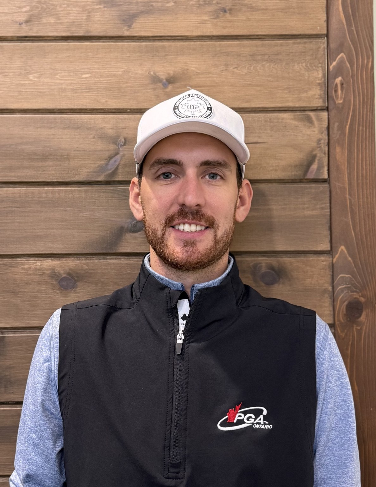
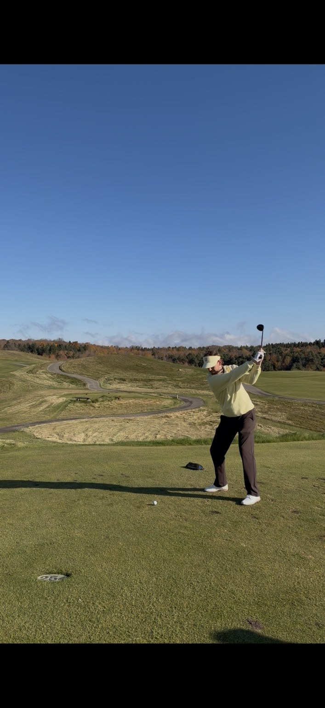

★★★★★
“A true professional, The passion for his craft is evident in everything he delivers.”
Jeff McDaid
Google review
PGA expertise, independent fitting, and custom craftsmanship at Burloak Indoor Golf.
A PGA of Canada professional since 2017, Mike Pike brings a relaxed, approachable style to club fitting and custom club building.
With training at TaylorMade's The Kingdom in Carlsbad, California, PING fitting certification, Golf Lab fitting certification, and TaylorMade Authorized Component Builder status and Authorized Miura Builder status, Mike pairs specialized knowledge with a genuine passion for equipment.
Expect a comfortable conversation — with technical depth whenever it's useful.

Walk through Burloak's front entrance and ask for Mike. The custom-building workshop is at the back of the facility.
Approachable lessons for beginners and developing golfers, focused on solid fundamentals, useful practice habits, and realistic long-term goals — not quick fixes.
Request a Golf Lesson
See what golfers have shared about their experience with Mike Pike Golf.
“A true professional, The passion for his craft is evident in everything he delivers.”
Google review
“Mike is great! He’s super knowledgeable and takes the time to explain every step of the process.”
Google review
“Amazing to work with, made everything very easy to understand and was very in depth when explaining!”
Google review